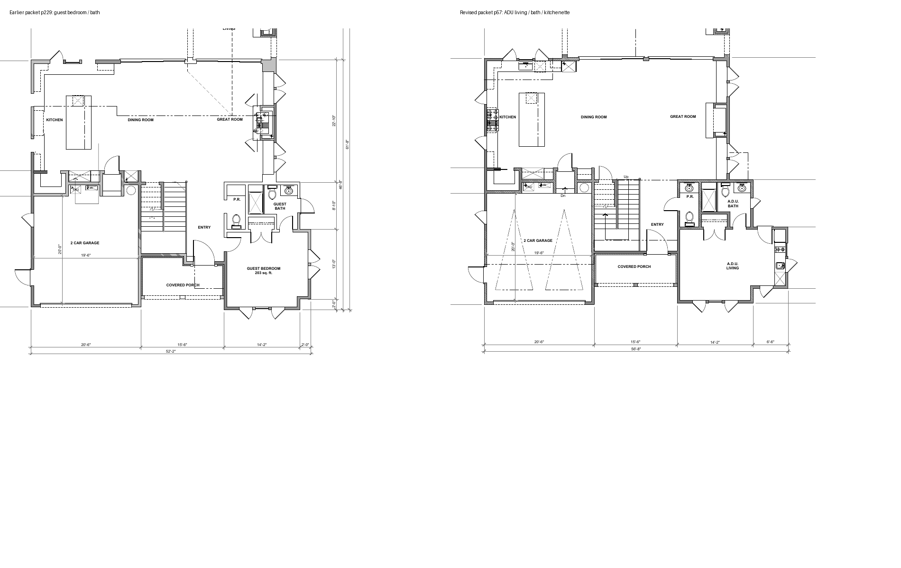
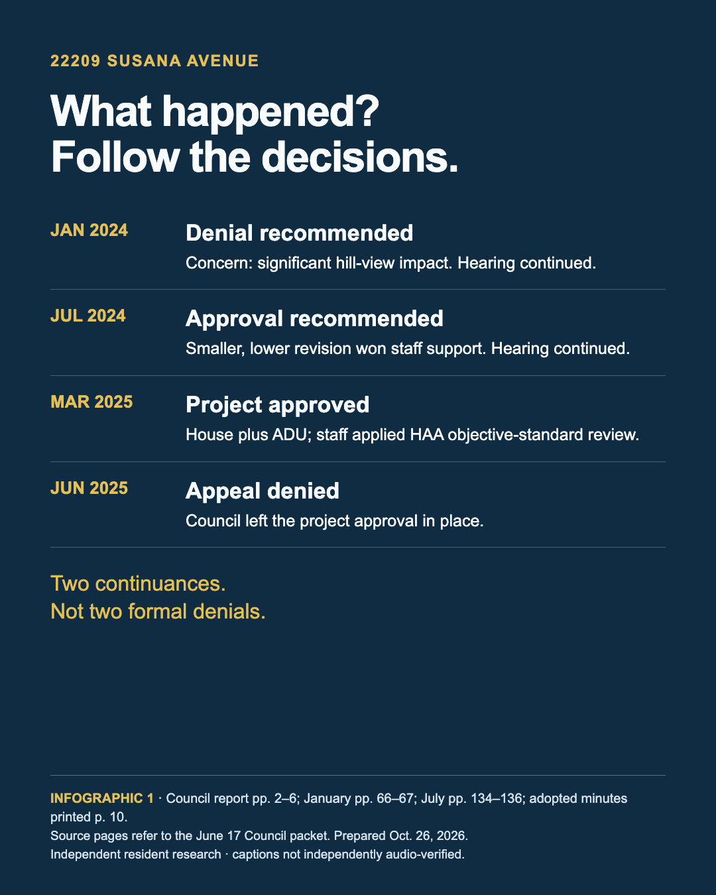

Resident research · October 26, 2026
Hillside Overlay and ADUs
How Torrance reviews hillside development, what changed in five documented residential cases, and what remains unresolved about proposed standards.
Recent Council records added: September 1 decisions update Via Linda Vista and add Via El Chico and Calle Mayor. The October 6 senior mixed-use staff report conflicts with the archived May approval certification. Read the scope and unresolved limits .
Five documented residential cases
22209 Susana Avenue
- Case
- PRE23-00013
- Review scope
- Adopted main-house HAA finding
- Protection
- Council Resolution 2025-39 finding 4 applies HAA objective-standard review to the revised main residence in the house-plus-ADU proposal. Staff describes neighborhood compatibility and view-impact criteria as subjective and says those hillside provisions cannot be applied to the revised proposal.
- Review retained
- Staff still evaluates R-1 setbacks, height, lot coverage and floor-area standards; the adopted decision finds objective R-1 compliance and imposes conditions. Height/grade language and corrected issued sheets remain unresolved.
- Design changes
- Compared with the July 2024 staff-table version, main interior decreased from 3,225 to 3,126 square feet; a 355-square-foot ADU produces a combined reported increase of 256 square feet. Earlier guest-bedroom/bath space becomes ADU living/bath space with kitchenette fixtures. These are proposal differences, not measured construction or proof of a causal HAA effect.
- Decision
- The January and July 2024 house-only hearings were continued. Staff recommended approval of the revised house-only design in July. Council denied the later appeal and upheld approval on June 17, 2025.
- Permit stage
- Main-house and ADU permits show Issued. Revision BLD25-02054-R01 shows Corrections Needed and describes window, bathroom and playroom changes. Final inspection and occupancy are not established.
- Still unknown
- Corrected issued plan dimensions, reconciled height/grade and area definitions, completed housing and the design change attributable to HAA.
- Vote-tally limit
- The June 17 Council minutes report “5–0” while also recording Mattucci voting no and Sheikh absent. No corrected numerical tally is asserted here. Adopted minutes, printed pp. 9–10 .
5340 Doris Way
- Case
- PRE24-00007
- Review scope
- Staff HAA explanation in official minutes
- Protection
- January 15, 2025 minutes record staff explaining HAA protection for the two-unit proposal, including the two-story primary dwelling. The Commission approved the case and adopted Resolution 24-070, 7–0.
- Review retained
- The minutes expressly say local ordinances still apply. The signed resolution and its operative conditions have not been recovered, so the exact treatment of individual hillside findings remains unresolved.
- Design changes
- Current applications describe a 2,953-square-foot main house and a 469-square-foot attached ADU. No comparable earlier/approved plan pair has been recovered; whether an ADU was introduced after a house-only version is unknown.
- Decision
- The November 2024 hearing was postponed for re-noticing. January 2025 minutes document approval and adoption; a later appeal outcome has not been established.
- Permit stage
- The main-house, ADU and grading records show Corrections Needed. These application-stage observations do not establish issued permits or completed housing.
- Still unknown
- Signed operative resolution, earlier versus approved designs, any later appeal/revisions, issuance, final inspections and occupancy.
439 Via Linda Vista
- Case
- MHE25-00051
- Review scope
- ADU-specific scope; garage review retained
- Protection
- The August 2026 staff packet excludes the separately proposed second-story ADU from discretionary review of the garage MHE. It does not establish main-residence HAA treatment.
- Review retained
- Staff applied R-1 and Hillside review to the proposed 694-square-foot garage. Following the August 11 appeal denial, Council adopted Resolution 2026-77 denying the garage MHE and appeal on September 1. The earlier draft approval was not the adopted outcome.
- Design changes
- The original application mentions 790-square-foot garage/ADU components; the later hearing request is a 694-square-foot garage. A same-parcel October 2026 clearance record describes a 998-square-foot ADU above an existing garage. These are different scopes/records, not a verified sequence of approved enlargements.
- Decision
- Council denied the appeal without prejudice, 4–0, on August 11, 2026. Revised September 1 minutes then record adoption of Resolution 2026-77 denying the garage MHE and appeal, 5–0, with two recusals. The earlier Accela Approved label does not supersede these Council actions. This resolves that entitlement action, not every later ADU application or a permanent ban.
- Permit stage
- PAC26-00107 shows Received as of October 20, 2026. This clearance proposal is not a building permit, proof of approval or completed ADU; its relationship to the earlier proposal needs reconciliation.
- Still unknown
- Any later entitlement or ADU application outcome, approved scope of the October clearance proposal, linked ADU building permit, final inspection and occupancy.
459 Via El Chico
- Case
- PRE25-00005
- Review scope
- Neighbor ADU/SB 9 protections; main-house HAA not established
- Protection / scope
- First- and second-story additions and basement-level garage to an existing three-story residence. The ADU and two SB 9 units discussed by staff are on the neighboring property at 23719 Susana Avenue, not the applicant's house-addition proposal. Staff says the neighbor's original home retains Hillside protection, but applies its stated custom/practice to the newer ADU and SB 9 units when assessing view/privacy claims. This is attributed City reasoning, not an independently settled legal rule. Staff also evaluates privacy impacts on their merits.
- Review retained
- Precise Plan and discretionary front-setback waiver; view, light, air and privacy analysis remained part of the report. This does not establish an HAA exemption for the applicant's main house.
- Design changes
- Staff reports FAR 0.59 and addition height 17.05 feet measured under the down-sloping-lot curb rule. Council minutes describe height/roof modifications; a quantified earlier/final plan comparison remains outstanding.
- Decision
- Council denied the appeal and upheld approval, adopting Resolutions 2026-79 and 2026-80, 6–0, one recusal. The motion also contains a stray MOD26-001 reference; do not merge it with the separate Calle Mayor case.
- Permit stage
- Applicant-project permit issuance, finals and occupancy were not checked in this follow-up. Staff's construction statement concerns the neighboring ADU/SB 9 development.
- Still unknown
- Quantified earlier/final design comparison, applicant-project permit issuance, final inspections and occupancy.
317 Calle Mayor
- Case
- MOD26-00001
- Review scope
- Conventional hillside comparison; main-house HAA not established
- Protection / scope
- First- and second-story additions to an existing two-story house; modification of a prior Precise Plan. The reviewed staff analysis applies the Hillside view/privacy review. No project-specific main-house HAA or ADU protection determination was established in these selected passages.
- Review retained
- Silhouettes, neighbor site visits, window/balcony privacy review and discretionary Council appeal remained applicable.
- Design changes
- Staff reports replacing an approximately 484-square-foot sun deck with a 319-square-foot bedroom and 144-square-foot balcony; window muntins were added after privacy concerns. These are reported proposal metrics, not measured as-built effects. Appellants disputed whether the old deck was usable; do not present the no-new-vantage conclusion as uncontested.
- Decision
- Council denied the appeal and adopted Resolution 2026-81, 5–1, with one recusal. Use this final motion, not the internally inconsistent hearing-closure tally.
- Permit stage
- No issuance, final inspection or occupancy verification in this follow-up.
- Still unknown
- Reconciled earlier/approved design evidence, permit issuance, final inspections and occupancy.
When does adding an ADU change review of the main house?
ADU and HAA review
The key is the scope of the City's documented decision. ADU-specific protection and Housing Accountability Act treatment of a combined housing proposal are separate questions. Five Torrance residential cases show why an ADU label alone does not answer which parts of a project receive protection.
State ADU law limits discretionary barriers to qualifying accessory units. Separately, the HAA limits local denial and density-reducing conditions for qualifying housing proposals consistent with applicable objective standards, subject to statutory qualifications and exceptions. The City's actual determination, project scope and application history matter. Current HCD guidance explains the general framework; it does not retroactively decide these cases.
HCD-HAA HCD-ADU- Identify the work under review: accessory unit, main residence, garage or combined development.
- Find the actual staff or adopted determination and identify the standards it addresses.
- Compare the designs and trace approval, permit issuance and completion separately.
The Susana layout changed
Hearing proposal comparison


Architectural sheets by Douglas Leach Architecture, reproduced in the Council hearing packet, PDF pp. 229 and 57. These are hearing proposals; corrected issued and as-built plans remain outstanding.
SUSANA-STAFF SUSANA-PILOTHearing proposal comparison


Senior mixed-use: unresolved decision history
Senior mixed-use: later history conflicts with the May approval copy
This separate project contains 20 senior apartments and 1,608 square feet of commercial space. The October 6 staff report says Council upheld the appeal and denied the project on May 19, 7–0; denial resolutions were pulled on June 23; and Council directed staff on September 15 to return with approval resolutions, 5–1, with one recusal.
The October item proposed approval and additional traffic conditions. Its staff report discusses HAA applicability, objective standards and an HCD referral. A referral does not establish an HCD enforcement finding.
The archived Resolution 2026-46 copy carries a May approval certification that conflicts with this later official account. Both sources are retained. The final October 6 motion and operative signed resolutions remain unresolved; May approval is not treated as settled. This mixed-use project stays outside the house-plus-ADU count.
SENIOR-OCT, PDF pp. 1–2 SENIOR-RES, conflicting certificationWhat this tells us
What this tells us
Susana documents main-house HAA treatment; Doris supplies another staff explanation at the minutes level. Via Linda Vista retains garage review. Via El Chico concerns a neighboring ADU/SB 9 development, and Calle Mayor supplies a conventional hillside comparison. These five cases demonstrate different scopes of review; they do not establish that every ADU overrides hillside review or a prevalence rate.
Publish the legal determination, approved scope and final appeal outcome together; reconcile plan revisions; and track approval, permit issuance and housing completion separately. These are constructive transparency measures supported by the record gaps.
Read the source-review ledger and coverage limits . No rate of occurrence, completed-unit total or neighborhood-wide harm estimate is established.
What it is: an overlay, not a replacement zone
The overlay framework
Formally, the Hillside and Local Coastal Overlay Zone (R-H) . It sits on top of the underlying zoning, most often R-1 single-family, and where the two conflict, the more restrictive rule wins (TMC § 91.41.2). Its boundaries are not a list of parcels. The zone is simply the three maps, Exhibits A, B and C, incorporated into § 91.41.1(a) by reference.
Why it exists, in staff's words
City staff use the same formulation in 2021, February 2026 and May 2026: the overlay "was adopted in 1977 and was intended to provide special protections for properties in areas that have unique topography and deserve special consideration in terms of View, Light, Air and Privacy. In addition, the overlay provides guidelines for development in the Coastal Zone, which applies to properties west of Palos Verdes Boulevard."
One caution for anyone quoting a "purpose statement": the code text of Article 41 itself contains no purpose preamble. Purpose language lives in the findings at § 91.41.6 and in § 91.41.9(b), which cites "safety, general welfare, aesthetic control, and to help stabilize land values and investments." Most quoted purpose lines come from staff reports, not the ordinance.
The code language that does the work
"The provisions of this Article shall apply to all properties within the Overlay Zone in addition to the requirements of the underlying zone… No permits shall be issued for development in the Hillside and Coastal Zone unless the requirements of this Article have been met." TMC § 91.41.1(b)
"Any development on a lot within the Hillside and Coastal Zone shall be subject to approval by the Planning Commission of a Precise Plan… except as provided in Sections 91.41.7, 91.41.8, and 91.41.14." TMC § 91.41.5(a). The exceptions are where most homes actually land: see the review tracks below.
Ordinance history
From the Planning Commission workshop of May 19, 2021, the ordinance-by-ordinance history reviewed for this briefing.
| Ordinance | Adopted | What it did (per staff's 2021 table) |
|---|---|---|
| 2747 | May 24, 1977 | Establishes the R-H Zone (Hillside Overlay) |
| 2760 | June 21, 1977 | Establishes exemptions for certain types of development |
| 2961 | April 22, 1980 | Establishes the Precise Plan process |
| 2982 | October 14, 1980 | Provides development regulations |
| 3027 | November 3, 1981 | Amended guidelines for review |
| 3110 | June 26, 1984 | Removed and replaced Article 41; provided development standards |
| 3126 | November 27, 1984 | Clarified and deleted sections; added lot-width provisions; renumbered |
| 3144 | June 25, 1985 | Clarified provisions; rearranged sections; added provisions |
| 3477 | January 18, 2000 | Amended Article 41; deleted the hardship provision (a separate waiver route already existed at TMC § 94.2.1) |
A wrinkle, preserved rather than smoothed: the Article 41 header line reproduced in 2026 lists ordinances only through O-3144, yet § 91.41.3 is marked "(Amended by O-3283)" and § 91.41.6 "(Amended by O-3477)." Staff in 2021 and twice in 2026 consistently state the last amendment was Ordinance 3477 in 2000.
Background sources: February 18, 2026 City staff report (PDF) · May 19, 2026 City workshop packet (PDF) · Code and historical sources .
Where it applies
Map boundaries
Staff describe the overlay as stretching "across the southern and western portions of the City," with each project analyzed on its own merits. Real-estate explainers (secondary sources) consistently describe it as primarily the Hollywood Riviera and Seaside Ranchos neighborhoods, and the Seaside Neighborhood Association confirms parts of Seaside are in it. But case addresses in the primary record, on Susana Avenue, Via Anita, Calle de Arboles and Doris Way, confirm overlay parcels well beyond the Riviera. "Hollywood Riviera only" would be wrong. No official neighborhood list was located in the reviewed sources.
Overlay size was not located in the reviewed sources
Neither the code nor the 2021 and 2026 staff workshops publish a parcel count or acreage for the Hillside Overlay. The boundary is the three exhibit maps only. A figure sometimes seen nearby, "104 acres / 1 mile coastline / 1,076 housing units," comes from a 2020 City short-term-rental presentation about the separate Coastal Overlay . It must not be relabeled as the hillside overlay's size.
Hillside and Coastal are not synonyms
Staff are explicit: "All properties west of Palos Verdes Boulevard fall within the Coastal Zone but not all fall within the Hillside Overlay District." There is one Article 41 with a coastal sub-framework (§ 91.41.13 adds coastal review factors, a 35 ft multi-family height guideline west of Palos Verdes Blvd, sign limits, and bluff and beach rules). Projects in the Coastal Zone may also face California Coastal Commission review.
Underlying zones inside the overlay
Per staff (2026): A-1 Light Agricultural, R-1 Single-Family Residential, R-3 and R-4 multi-family, C-1, C-2, C-3 and C-5 commercial, P-U Public Use, P-1 Open Area, and HBCSP-WT. Most residential cases are R-1.
Edge effects, documented
- No opt-out for ordinary lots. At 417 Via Anita, an owner inside the overlay asked for a variance exempting the lot from Article 41 entirely. The City denied it: no special circumstances, and no general escape because a lot is flat or large.
- Neighbors outside the line. A 2010 Council resolution (122 Calle de Arboles, Res. 2010-81) found that properties in Palos Verdes Estates and Torrance properties outside the overlay "are not subject to the burdens" of the overlay "and therefore are not entitled to the benefits" of it, while still assessing that project's impacts on those neighbors' views in that case.
- Map corrections: no published boundary-amendment or map-correction proceeding for Exhibits A to C was found. Whether the 1977 maps have ever been formally redrawn is an open question.
Background sources: February 18, 2026 City staff report (PDF) · May 19, 2026 City workshop packet (PDF) · Code and historical sources .
How review works: three tracks
Review process
Every hillside project is screened into one of three tracks. The tracks below describe the ordinary process; the case-specific state-law determinations above qualify how it applies. Source: staff's track table in the February and May 2026 workshop reports, plus § 91.41.14.
Decided by: staff, ministerial, no discretion
Building permit only
- Water heater, AC and heater replacement; reroofs; interior remodels with no added area and no new exterior openings.
- Fences and block walls, in-ground pools and spas, rooftop solar. Fences get a pre-permit Planning site inspection for view impacts; if potential impacts are found, the applicant is referred to the exemption track instead.
- ADUs and JADUs, and SB 9 units and urban lot splits. Staff's own table marks these "Mandated by several California Legislative Actions." State law makes them ministerial citywide, including inside the overlay.
The code's own exemption list (§ 91.41.14) lets the Building & Safety Director exempt retaining walls up to 3 ft, interior work, maintenance, fences up to 6 ft, pools, decks and similar items, unless they "may have a significant adverse effect on surrounding properties."
Decided by: the Community Development Director
Minor Hillside Exemption (MHE)
- Retaining walls up to 5 ft; new or enlarged windows and doors; one-story additions, patio covers and detached accessory structures below 14 feet and under 0.50 FAR.
- Process: plan review for setbacks, heights and parking; a mailed project-description letter to potentially affected owners with 10 days to respond (January 2026 Commission minutes describe a 10-business-day window; the wording difference is preserved here); if no response, the exemption issues and the project goes to Building & Safety plan check.
- The catch: an MHE requires staff to find no adverse impact and "no significant public controversy" (§ 91.41.7(d)). A neighbor objection can pull a small one-story project out of purely administrative handling into a signed Director's staff-report decision.
- MHE denials can reach Council. At 439 Via Linda Vista , Council denied the garage appeal on August 11 and adopted the garage MHE denial resolution on September 1, 2026; the separate ADU was outside that discretionary review.
Decided by: the Planning Commission at a public hearing; City Council on appeal
Precise Plan of Development (PRE)
- Required for: one-story additions over 14 ft , two-story additions, new two-story residences, anything pushing floor-area ratio over 0.50 , and roof decks.
- Notice: the code (§ 91.41.4) requires notice to owners within a 300-foot radius. Staff practice goes further: mailings to 500 feet , 10 days ahead, a Daily Breeze newspaper notice, and a public-notice sign on the site.
- The hearing "may be conducted in an informal manner; the rules of evidence shall not apply," and the applicant bears the burden of proving every Article 41 requirement is met. The Commission may consider mitigation the applicant never proposed.
- Applicants must erect a certified silhouette of the proposed building so staff and neighbors can judge height and mass from neighboring properties. Staff (at least two) visit, photograph from the objecting neighbor's areas of concern and from the site, without a zoom lens, and press applicants to contact neighbors and redesign. Major redesigns need revised plans, a new silhouette certification, and new visits.
Objective standards: what a tape measure can settle
| Standard | Rule | Source |
|---|---|---|
| Lot width | Minimum 50 ft (interior) / 60 ft (exterior), plus 1 ft for each 1% of slope over 15%, measured on the more restrictive of existing or finished grade | § 91.41.3 |
| No-hearing envelope | To avoid a Precise Plan: net interior area including garage at or under 50% of lot area; one story; no roof deck or roof equipment above the eave line; at or under 14 ft from finished grade | § 91.41.7 |
| FAR trigger | Over 0.50 FAR triggers Precise Plan findings. It is a trigger, not a cap: staff note the underlying R-1 zone allows FAR up to 0.60 | §§ 91.41.10-.11 |
| Slopes and drainage | Level setback of at least 5 ft between a structure wall and any adjacent slope over 15%; roof drainage directed to the street or an approved drainageway; stilt structures must screen utilities from public view | § 91.41.9 |
| Coastal numbers | West of Palos Verdes Blvd: multi-family "should not exceed" 35 ft above existing grade; no roof signs; monument ground signs max 8 ft | § 91.41.13 |
| Underlying R-1 | Heights, setbacks, lot coverage and FAR apply in addition, and staff verify them on every Precise Plan. Staff's HAA discussion uses a 27 ft maximum height as its example of an objective R-1 standard | Staff reports, 2026 |
What is not in Article 41: no tree-removal standard, no separate parking standard, and no roof-form or materials standard beyond the roof-deck and screening rules above. Claims that the overlay itself regulates trees or parking are not supported by the code text.
Subjective standards: the six findings
No construction, remodeling or enlargement gets a Precise Plan "unless the Planning Commission (or the City Council on appeal) shall find" all six of these. They are quoted verbatim because the whole controversy turns on their wording:
- "The proposed development will not have an adverse impact upon the view, light, air and privacy of other properties in the vicinity;"
- "The development has been located, planned and designed so as to cause the least intrusion on the views, light, air and privacy of other properties in the vicinity;"
- "The design provides an orderly and attractive development in harmony with other properties in the vicinity;"
- "The design will not have a harmful impact upon the land values and investment of other properties in the vicinity;"
- "Granting such application would not be materially detrimental to the public welfare and to other properties in the vicinity;"
- "The proposed development will not cause or result in an adverse cumulative impact on other properties in the vicinity."
TMC § 91.41.6. Height increases (§ 91.41.10) and FAR over 0.50 (§ 91.41.11) layer on hardship findings: infeasibility without the extra height, unreasonable hardship from denial, and no material detriment, judged on slope, lot size, width and topography.
"Adverse" means "substantial": the Youngern gloss
In Youngern v. City of Torrance (L.A. Superior Court Case No. BS116080, as cited in Res. 2010-81), the court held that "adverse impact" can only reasonably mean "substantial impact" , since every development has some impact, and that front yards are in the public realm with no reasonable expectation of privacy. Staff's working catalogue of substantial view impacts covers blocking whitewater or sand views, significant portions of blue-water ocean, the "queen's necklace," mountain, sunset or sunrise, pastoral Palos Verdes Peninsula, or city-light views. Staff also say the Commission and Council have typically prioritized views from original, unmodified homes over "acquired views" from homes already enlarged through the overlay process. None of that catalogue is in the code. It is staff-described practice, and staff still call Youngern the most notable litigated overlay case.
Misconception: "Two-story homes are banned"
No. They need a Precise Plan and a hearing. Staff list this first among corrected misconceptions (2021, still circulated in 2026).
Misconception: "FAR is capped at 0.50"
No. R-1 allows up to 0.60. Crossing 0.50 requires extra findings and justification, not a waiver of a cap.
Misconception: "Neighbors must sign off"
No. Signatures and notification belong to the MHE track. A Precise Plan needs notice and a hearing, not neighbor signatures. Roof decks likewise are not banned; they trigger the Precise Plan process.
Background sources: February 18, 2026 City staff report (PDF) · May 19, 2026 City workshop packet (PDF) · Code and historical sources .
What happened to the proposed standards?
Workshops and outreach
The reviewed records document workshops and public outreach. An adopted Article 41 rewrite was not located. Staff reports in 2026 identify the last overlay amendment as Ordinance 3477 in 2000; the separate 2025 ADU ordinance change does not establish an Article 41 rewrite.
- February 18, 2026: The Planning Commission received and filed the workshop report and requested research on an ADU vacancy tax. This was not adoption of new overlay standards. Commission minutes, printed p. 7 .
- May 19: Council accepted and filed the report, 7–0, with direction to explore a chat room, workshop, legal expert and neighborhood input. The motion supplied no firm return date. Council minutes, printed pp. 5–6 .
- Summer outreach: The City’s quarterly report announced an August 30 forum deadline. A later staff statement reproduced in the September public-comment packet reports that comments were accepted through August 31 and anticipates returning before year-end. These are different source statements; a staff expectation is not a scheduled hearing. City quarterly report · September packet source .
- September 15: A resident submitted an 18-foot single-story exemption proposal. It was public comment; staff endorsement or adoption was not established.
As of the October 26 search, an input summary, outside-counsel engagement or deliverable, City-authored draft standards and a scheduled Council return were not located. The old discussion route returned 404; the current City-linked project page displayed no public thread or results. This does not establish that comments were lost, ignored or never analyzed. Current submission availability was not verified.
Read the expanded search, coverage and remaining questions · City project page .
Retained checks: Quarterly report data (JSON; section node n-9EGdZT) · Code currency check (JSON) · Later agenda-title screen (JSON) · Public feedback page text snapshot .
Recent Council review and coverage
September cases, October follow-up
The newest directly relevant single-family hillside appeals found in this bounded check were heard September 1, 2026. The later October 6 item concerns the separate senior mixed-use project. Agendas for September 1, 15 and 22 and October 6, 13 and 20 were screened; September 22 and October 13 were closed-session meetings. The portal’s upcoming list was empty when checked.
No newer matching project was identified in the screened agenda titles. This is not a complete permit census or proof that no later administrative action exists. Applicant-project issuance, final inspections and occupancy were not checked for Via El Chico or Calle Mayor.
Project-specific appeal decisions and proposed approval resolutions do not establish adoption of new overlay standards.
Read the final motion with the right project
Via El Chico’s revised minutes contain a stray MOD26-001 reference; keep its PRE25-00005/WAV25-00003 and Resolutions 2026-79/80 separate from Calle Mayor’s MOD26-00001 and Resolution 2026-81. Calle Mayor’s hearing-closure tally is internally inconsistent; the reported 5–1 outcome is from its final motion.
The September Via Linda Vista resolution resolves the garage denial, while the October ADU clearance remains a separate application-stage observation. The senior mixed-use certification conflict remains open.
Revised September minutes (official PDF) · October senior mixed-use report (official PDF)
What remains uncertain
Evidence and coverage limits
This is a bounded public-record review dated October 26, 2026. It does not establish a prevalence rate, completed-unit count, measured neighborhood harm, improper motives, or a design change caused by HAA treatment. Permit stages are observations from that date, not live status.
Corrected issued Susana plans, reconciled dimensions and height/grade definitions, the signed Doris resolution, and later Via Linda Vista ADU applications remain unresolved. Susana’s written vote tally is inconsistent; automatic captions have not independently been checked against audio. The PDF summary retains those limits.
The follow-through search did not review every attachment, procurement record or committee action. It cannot establish that internal analysis or an expert engagement never occurred. A useful next question is when staff will publish an aggregate input summary, explain its recommendations and identify the next Council reporting date.
Sources and page references
HCD-HAA: HCD HAA fact sheet, April 2026
PDF pp1–2; general framework, not historical case determination
HCD-ADU: HCD ADU Handbook, March 2026
Permit Applications and Permitting Agencies; general accessory-unit review
SUSANA-RES: Adopted Council Resolution 2025-39
PDF p2 findings4–5; conditions on subsequent pages
SUSANA-STAFF: June 17, 2025 Susana staff packet
PDF pp4–5,17–19,57,59,133–134,229; staff scope, recommendations and design versions
SUSANA-PILOT: Susana source-page and dated-image pilot
Plan excerpts, 2024 continuance minutes and dated imagery; completion unresolved
DORIS-MIN: January 15, 2025 Planning Commission minutes
PDF pp6–7 / printed pp5–6
DORIS-NOV: November 6, 2024 Planning Commission minutes
PDF p4; postponement/re-noticing context
VIA-STAFF: August 11, 2026 Via Linda Vista staff packet
PDF pp1–4; July headers and draft approval preserved as source differences
VIA-MIN: Adopted August 11, 2026 Council minutes
PDF pp7–10 / printed pp5–8; appeal motion on PDF p10
LIVE-TWO: October 26 scoped Susana/Doris API refresh
16 same-parcel record leads; application, issuance and correction stages kept separate
LIVE-VIA: October 26 scoped Via Linda Vista API refresh
Known same-parcel records refreshed; not a new complete API census
SENIOR-RES: Archived Resolution 2026-46 copy — certification conflict
PDF p. 2 finding d; p. 5 May approval certification. This certification conflicts with the October staff history; final operative status is unresolved. Read alongside SENIOR-OCT.
Research downloads
Download five-case comparison (CSV) · Read the decision-source ledger · Source registry (JSON)
CHICO-STAFF: September 1, 2026 Via El Chico staff report
PDF pp. 1–8; scope and neighbor ADU/SB 9 discussion on pp. 3–4
CALLE-STAFF: September 1, 2026 Calle Mayor staff report
PDF pp. 1–5; privacy/design discussion on pp. 3–4
SEPT-MIN: Revised September 1, 2026 Council minutes
PDF p. 7 Via Linda Vista; pp. 8–10 Via El Chico; pp. 10–12 Calle Mayor; final motions pp. 10 and 12
SENIOR-OCT: October 6, 2026 senior mixed-use staff report
PDF pp. 1–2: prior May denial, June withdrawal, September direction, HCD referral and proposed approval; not October final action
VIA-SEPT-STAFF: September 1, 2026 Via Linda Vista denial report
PDF pp. 1–4; recommendation and attached denial resolution; adoption independently recorded in revised minutes
Overlay background sources
Primary records
Primary City and state sources first, all read October 26, 2026; the engagement page and code links were verified live that day. Secondary sources are flagged where they are used, and where they conflict with the primary record (Citizen Portal's Susana coverage misstates the date and the street name), the primary record governs.
Archived February staff report (PDF) Archived May workshop packet (PDF)
City of Torrance, primary
- TMC Article 41 (§ 91.41), official codified text: codepublishing.com/CA/Torrance § 91.41 ; R-1 (§ 91.4): § 91.4 . Online code states it is current through Ordinance 3939 (Nov. 19, 2024), so the 2026 staff attachments below are the best evidence of the text staff applied in 2026.
- Planning Commission staff report, Item 7A, Feb. 18, 2026 (full Article 41 and flowchart as attachments): torranceca.gov, Item 7A staff report (PDF)
- Feb. 18, 2026 workshop presentation: hillside workshop presentation (PDF) ; process flowchart: hillside overlay flowchart (PDF) ; fence and wall inspection handout: fence & wall inspections (PDF)
- City Council staff report, Item 10B workshop, May 19, 2026: PrimeGov, Item 10B staff report ; Council minutes, May 19, 2026 (Item 10B at pages 5 to 6): PrimeGov, May 19, 2026 minutes
- Planning Commission workshop, Item 7A, May 19, 2021 (ordinance history table; 560 MHEs, 2015 to 2020): library.torranceca.gov, 2021 workshop packet
- Resolution 2025-39 (22209 Susana Ave, PRE23-00013): publicdocs.torranceca.gov, Res. 2025-39 ; Planning Commission minutes, March 19, 2025: PC minutes, Mar. 19, 2025 ; Council minutes, June 17, 2025: Council minutes, Jun. 17, 2025
- Resolution 2025-38 (417 Via Anita, VAR22-00001): publicdocs.torranceca.gov, Res. 2025-38
- Resolution 2021-09 (310 Calle de Arboles, PRE20-01010): publicdocs.torranceca.gov, Res. 2021-09 ; Resolution 2010-81 (122 Calle de Arboles; recites Youngern , BS116080): publicdocs.torranceca.gov, Res. 2010-81
- Planning Commission agenda packet, Nov. 6, 2024 (Doris Way postponement; 5614 Palos Verdes Blvd): library.torranceca.gov, Nov. 6, 2024 packet ; minutes: PC minutes, Nov. 6, 2024
- Engagement page, Single Family and Hillside & Coastal Overlay Zone (published June 24, 2026; verified live Oct. 26, 2026): engage.zencity.io/torrance-ca, Single Family and Hillside project
- City eNewsletter, Aug. 27 to Sept. 2, 2026 (comment period closing): Torrance eNewsletter, Aug. 27, 2026
- Public Comment Report, Council, Sept. 15, 2026 (Buck comments, memo and proposed ordinance; staff comment-period statement as quoted there): PrimeGov, Sept. 15, 2026 comment packet
- RHA statement filed with the City, 2006 Council packet: publicdocs.torranceca.gov, RHA 2006 statement
- Draft General Plan Community Resources Element, public-review draft, Sept. 1, 2026 (Scenic Vistas, § 3.10.2; draft, not adopted): torranceca.gov, draft Community Resources Element (PDF)